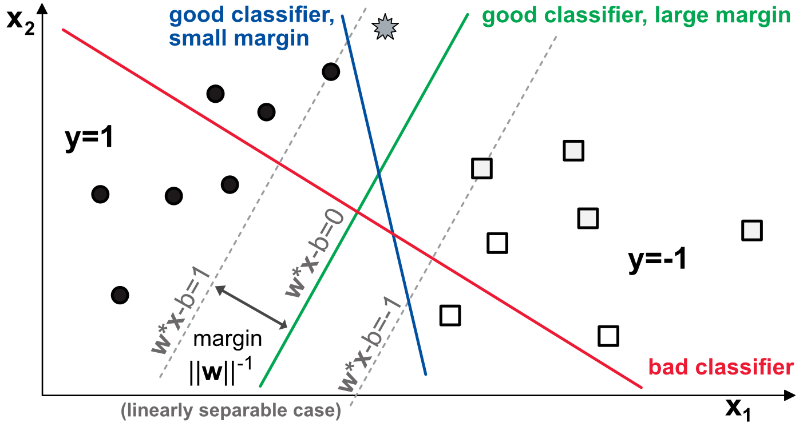
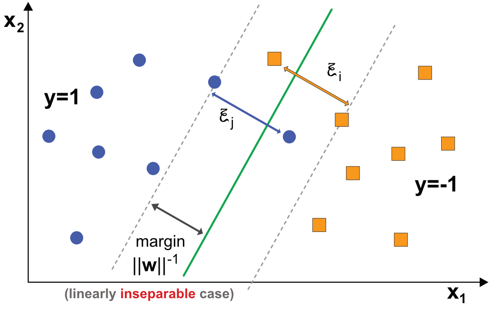
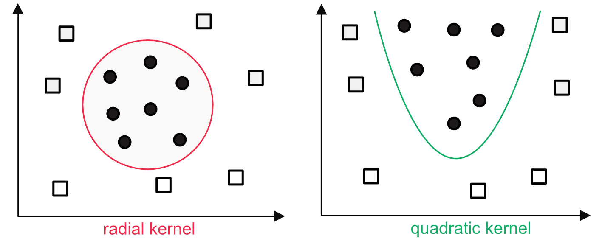
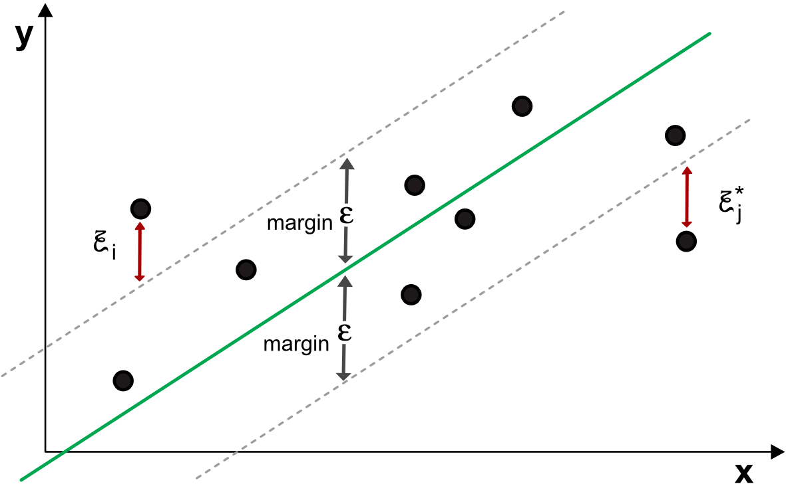

8 支持向量机
虽然支持向量机 (SVMs) 的起源很古老（并且可以追溯到 Vapnik and Lerner (1963)），他们的现代治疗始于 Boser, Guyon, and Vapnik (1992) 和 Cortes and Vapnik (1995) （二元分类）和 Drucker et al. (1997) （回归）。我们参考 http://www.kernel-machines.org/books 有关其理论和经验特性的详尽参考书目。 SVMs 自创建以来在机器学习社区中非常受欢迎。尽管如此，其他工具（尤其是神经网络）已经流行起来，并在计算机视觉等许多应用中逐渐取代了 SVMs。
8.1 SVM 用于分类
正如机器学习中常见的情况，通过二元分类的插图更容易解释复杂的工具。事实上，有时，这就是工具最初的设计方式（例如，感知器）。让我们考虑一个平面上的简单例子，即具有两个特征。图中 8.1，目标是找到一个能够正确分类点的模型：实心圆圈与空心方块。

图 8.1：带有支持向量的二元分类图。
模型由两个权重组成 \(\textbf{w}=(w_1,w_2)\) 加载变量并在平面中创建自然的线性分离。在上面的示例中，我们显示了三个分离。红色不是一个好的分类器，因为它的上方和下方都有圆圈和正方形。蓝线是一个很好的分类器：所有圆圈都在其左侧，所有方块都在其右侧。同样，绿线获得了完美的分类分数。然而，两者之间存在显着差异。
图表顶部的灰色星星是一个神秘点，考虑到它的位置，如果数据模式成立，它应该是一个圆圈。蓝色模型无法识别它，而绿色模型则成功。该示意图的有趣特征是那些我们尚未提及的特征，即灰色虚线。这些线代表无人区，在执行绿色模型时不会出现任何观测结果。在此区域中，绿线上方和下方的每个条带均可视为模型的误差范围。通常，灰色星星位于该边缘内。
两个边距计算为使模型与正确分类的最近点（两侧）之间的距离最大化的平行线。这些点称为 支持向量，这证明了该技术的名称是正确的。显然，绿色模型比蓝色模型有更大的余量。 SVMs 的核心思想是在分类器不出错的约束下，最大化margin。换句话说，SVMs 尝试在所有产生正确分类的模型中选择最稳健的模型。
更正式地说，如果我们在数字上将圆定义为 +1，将正方形定义为 -1，则任何“好的”线性模型都应该满足： \[\begin{equation} \tag{8.1} \left\{\begin{array}{lll} \sum_{k=1}^Kw_kx_{i,k}+b \ge +1 & \text{ when } y_i=+1 \\ \sum_{k=1}^Kw_kx_{i,k}+b \le -1 & \text{ when } y_i=-1, \end{array}\right. \end{equation}\]
可以概括为紧凑的形式 \(y_i \times \left(\sum_{k=1}^K w_kx_{i,k}+b \right)\ge 1\)。现在，绿色模型和灰色虚线上的支持向量之间的边距等于 \(||\textbf{w}||^{-1}=\left(\sum_{k=1}^Kw_k^2\right)^{-1/2}\)。该值来自以下事实：点之间的距离 \((x_0,y_0)\) 和一条参数化的线 \(ax+by+c=0\) 等于 \(d=\frac{|ax_0+by_0+c|}{\sqrt{a^2+b^2}}\)。对于上面定义的模型 (8.1)，分子等于 1，范数为 \(\textbf{w}\)。因此，最终的问题如下：
\[\begin{equation} \tag{8.2} \underset{\textbf{w}, b}{\text{argmin}} \ \frac{1}{2} ||\textbf{w}||^2 \ \text{ s.t. } y_i\left(\sum_{k=1}^Kw_kx_{i,k}+b \right)\ge 1. \end{equation}\]
该程序的双重形式（参见第 5 章） Boyd and Vandenberghe (2004)) 是
\[\begin{equation} \tag{8.3} L(\textbf{w},b,\boldsymbol{\lambda})= \frac{1}{2}||\textbf{w}||^2 + \sum_{i=1}^I\lambda_i\left(y_i\left(\sum_{k=1}^Kw_kx_{i,k}+b \right)- 1\right), \end{equation}\] 其中任一 \(\lambda_i=0\) 或 \(y_i\left(\sum_{k=1}^Kw_kx_{i,k}+b \right)= 1\)。因此，只有某些点在解决方案中很重要（所谓的支持向量）。一阶条件要求该拉格朗日函数的导数为零： \[\frac{\partial L}{\partial \textbf{w}}L(\textbf{w},b,\boldsymbol{\lambda})=\textbf{0}, \quad \frac{\partial L}{\partial b}L(\textbf{w},b,\boldsymbol{\lambda})=0,\] 第一个条件导致 \[\textbf{w}^*=\sum_{i=1}^I\lambda_iu_i\textbf{x}_i.\] 该解决方案确实是特征的线性形式，但只考虑了一些点。他们是那些不平等的人 (8.1) 是平等的。
当然，只要无法满足条件，即无论选择什么系数，一条简单的线都无法完美地分隔标签，这个问题就变得不可行。这是最常见的配置，然后逻辑上调用数据集 不是线性可分的。这使过程变得复杂，但可以采取一些技巧。这个想法是引入一些灵活性 (8.1) 通过添加允许满足条件的修正变量：
\[\begin{equation} \tag{8.4} \left\{\begin{array}{lll} \sum_{k=1}^Kw_kx_{i,k}+b \ge +1-\xi_i & \text{ when } y_i=+1 \\ \sum_{k=1}^Kw_kx_{i,k}+b \le -1+\xi_i & \text{ when } y_i=-1, \end{array}\right. \end{equation}\]
哪里有新奇的东西， \(\xi_i\) 是积极的所谓 “松弛”变量 使条件变得可行。它们如图所示 8.2。在这个新配置中，没有简单的线性模型可以完美地区分这两类。

图 8.2： SVM 的二元分类图 - 线性不可分数据。
那么优化程序就变成了 \[\begin{equation} \tag{8.5} \underset{\textbf{w},b, \boldsymbol{\xi}}{\text{argmin}} \ \frac{1}{2} ||\textbf{w}||^2+C\sum_{i=1}^I\xi_i \ \text{ s.t. } \left\{ y_i\left(\sum_{k=1}^Kw_k\phi(x_{i,k})+b \right)\ge 1-\xi_i \ \text{ and } \ \xi_i\ge 0, \ \forall i \right\}, \end{equation}\] 其中参数 \(C>0\) 调整错误分类的成本：as \(C\) 增加，错误变得更加惩罚。
此外，该程序可以通过核函数推广到非线性模型 \(\phi\) 应用于输入点 \(x_{i,k}\)。非线性核函数可以帮助处理比直线更复杂的模式（见图 8.3）。常见的核可以是多项式核、径向基核或 sigmoid 核。该解决方案是使用或多或少的约束二次规划标准技术找到的。一旦权重 \(\textbf{w}\) 和偏置 \(b\) 通过训练设置，对新向量的预测 \(\textbf{x}_j\) 是简单地通过计算得出的 \(\sum_{k=1}^Kw_k\phi(x_{j,k})+b\) 并根据表达式的符号选择类别。

图 8.3：非线性内核示例。
8.2 SVM 用于回归
分类SVM的思想可以移植到回归练习中，但边际的作用不同。一种通用的表述如下
\[\begin{align} \underset{\textbf{w},b, \boldsymbol{\xi}}{\text{argmin}} \ & \frac{1}{2} ||\textbf{w}||^2+C\sum_{i=1}^I\left(\xi_i+\xi_i^* \right)\\ \text{ s.t. }& \sum_{k=1}^Kw_k\phi(x_{i,k})+b -y_i\le \epsilon+\xi_i \\ \tag{8.6} & y_i-\sum_{k=1}^Kw_k\phi(x_{i,k})-b \le \epsilon+\xi_i^* \\ &\xi_i,\xi_i^*\ge 0, \ \forall i , \end{align}\]
如图所示 8.4。用户指定一个 保证金 \(\epsilon\) 并且模型将尝试找到标签之间的线性（直到核变换）关系 \(y_i\) 和输入 \(\textbf{x}_i\)。就像在分类任务中一样，如果数据点位于带内，则松弛变量 \(\xi_i\) 和 \(\xi_i^*\) 均设置为零。当点违反阈值时，目标函数（代码的第一行）将受到惩罚。注意设置大 \(\epsilon\) 留下更多错误的空间。模型训练完成后，将进行预测 \(\textbf{x}_j\) 简直就是 \(\sum_{k=1}^Kw_k\phi(x_{j,k})+b\).

图 8.4： SVM 回归图。
让我们退一步来简化算法的作用，即：最小化权重平方和 \(||\textbf{w}||^2\) 误差足够小（以松弛变量为模）。从本质上讲，这与惩罚线性回归有点相反，惩罚线性回归寻求最小化误差，前提是权重足够小。
本节中列出的模型是 SVM 发动机领域的预览，并且已经开发了其他几种公式。一个用 C 和 C++ 编码的参考库是 LIBSVM 它被许多其他编程语言广泛使用。有兴趣的读者可以看看相应的文章 Chang and Lin (2011) 有关 SVM 动物园的更多详细信息（2019 年 11 月的最新版本也可在线获取）。
8.3 练习
在 R 中，LIBSVM 库在多个包中被利用。其中之一， e1071，是一个不错的选择，因为它还嵌套了许多其他有趣的函数，特别是我们稍后将看到的朴素贝叶斯分类器。
在 LIBSVM 的实现中，包需要分别指定标签和特征。因此，我们回收用于提升树的变量。此外，训练速度很慢，我们在这些集合的子样本（前一千个实例）上执行它。
library(e1071)
fit_svm <- svm(y = train_label_xgb[1:1000], # Train label
x = train_features_xgb[1:1000,], # Training features
type = "eps-regression", # SVM task type (see LIBSVM documentation)
kernel = "radial", # SVM kernel (or: linear, polynomial, sigmoid)
epsilon = 0.1, # Width of strip for errors
gamma = 0.5, # Constant in the radial kernel
cost = 0.1) # Slack variable penalisation
test_feat_short <- dplyr::select(testing_sample,features_short)
mean((predict(fit_svm, test_feat_short) - testing_sample$R1M_Usd)^2) # MSE## [1] 0.03839085## [1] 0.5222197结果比 boosted 树的结果稍好。所有参数都是完全任意的，尤其是内核的选择。我们最后转向一个分类示例。
fit_svm_C <- svm(y = training_sample$R1M_Usd_C[1:1000], # Train label
x = training_sample[1:1000,] %>%
dplyr::select(features), # Training features
type = "C-classification", # SVM task type (see LIBSVM doc.)
kernel = "sigmoid", # SVM kernel
gamma = 0.5, # Parameter in the sigmoid kernel
coef0 = 0.3, # Parameter in the sigmoid kernel
cost = 0.2) # Slack variable penalisation
mean(predict(fit_svm_C,
dplyr::select(testing_sample,features)) == testing_sample$R1M_Usd_C) # Accuracy## [1] 0.5008973小训练样本和我们选择参数的任意性都可能 解释一下为什么预测准确度这么差。